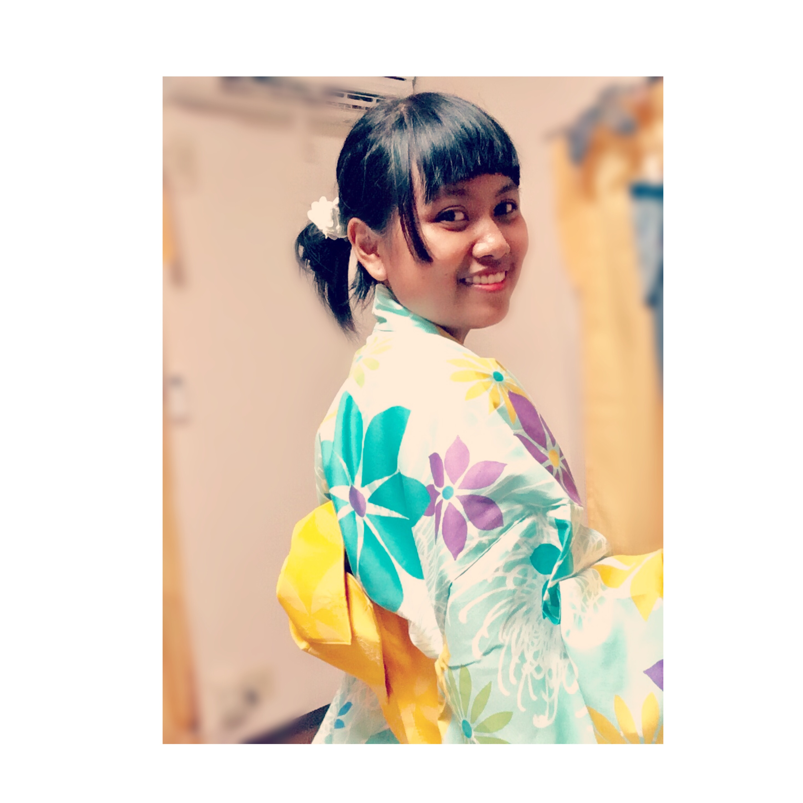

About Me
| Nama | Nabilah Meida Aditya |
| Warna Favorit | Hitam dan Putih |
| Type BLood | B |
| Makanan Favorit | Inari sushi dan Karaage |
This is page to talk about me...
Aku adalah anak gembala yang selalu riang dan tak kenal lelah karena hidupku
selalu belajar dari pengalaman, kerja keras untuk mengejar cita - cita,
rajin dan berlatih untuk setiap hal yang dikerjakan,
dan berusaha untuk memperbaiki keadaan dimana pun
aku berada, asik!, Halo namaku Nabilah Meida Aditya panggil aja aku bila
(bila kamu disisiku hati rasa syahdu) oke fix itu lagu roma irama ya, maafkan!
Aku lahir pada saat zaman ORDE BARU saat penurunan tahta Presiden Soeharto tanggal 10 Mei 1998
disitu indonesia sedang tidak aman, dan banyak sekali gebrakan demonstrasi mahasiswa,
dan untungnya aku lahir dengan sehat saat itu dan sekarang ini.
Dan bulan Mei 1998 pula saat itu CSS2 diterbitkan.
Aku lahir di kota Angin atau juga disebut kota Kecap yaitu Kota Majalengka Jawa Barat,
kota yang dihimpit antara kota Cirebon dan Sumedang ini.
Aku anak pertama dari 3 bersaudara, yang satu kandung yang satu angkat(angkat kemana ya ?),
maksudnya anak yang yang diadopsi dari anak kakaknya mamah (duh ribetnya),
adik kandung pertama cewe namanya Oktaviana Salsa Aditya(16thn) kelas 1 SMK, dan yang adik
angkat cowo namanya Muhammad Abdulla(8thn) kelas 3 SD.
Dulu ketika mamah sedang mengandungku dia ngidam makan balakutak(tumis cumi2 yang warnanya item itu)
sehingga lahirlah aku dengan kulit yang hitam ini(katanya).